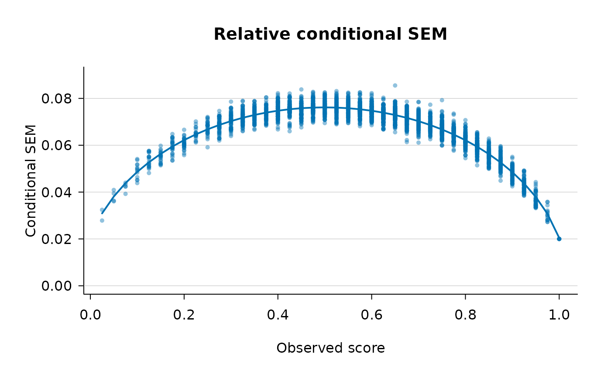

A simulated person-by-item matrix of dichotomously scored responses
built to mimic the summary characteristics of the ITED Vocabulary
Test example analysed in Brennan (1998, p. 314; Figure 1, p. 315).
It is intended as a self-contained illustration dataset for the
single-facet, person-by-item crossed Generalizability Theory design
implemented in csem_gt.
Format
An integer matrix with 3000 rows (persons) and 40 columns
(items). Each entry is 0 or 1 (incorrect / correct). Columns are
named item01, item02, ..., item40.
Source
Simulated to match the summary statistics of the ITED Vocabulary Test example in Brennan, R. L. (1998). Raw-score conditional standard errors of measurement in generalizability theory. Applied Psychological Measurement, 22(4), 307-331. The underlying instrument is described in Feldt, L. S., Forsyth, R. A., Ansley, T. N., & Alnot, S. D. (1993, 1994). Iowa Tests of Educational Development. Riverside.
Details
These are simulated data, not the original ITED data. The
real Iowa Tests of Educational Development Vocabulary data described
by Feldt, Forsyth, Ansley, and Alnot (1993, 1994) are not publicly
available. iowa_like was generated from a Rasch (1PL) model
whose parameters were calibrated so that the ANOVA-based mean
absolute and relative error variances reproduce the values Brennan
reports: \(\bar{\sigma}^2(\Delta) \approx .00514\) and
\(\bar{\sigma}^2(\delta) \approx .00475\). The matrix uses
\(A = 3000\) simulated persons, matching Brennan's own use of
3,000 generated examinees for the absolute-error illustration. The
full, seeded generation script is in data-raw/make_iowa_like.R.
References
Brennan, R. L. (1998). Raw-score conditional standard errors of measurement in generalizability theory. Applied Psychological Measurement, 22(4), 307-331.
Examples
data(iowa_like)
dim(iowa_like)
#> [1] 3000 40
iowa_like[1:5, 1:6]
#> item01 item02 item03 item04 item05 item06
#> [1,] 1 0 0 0 0 0
#> [2,] 1 1 1 1 1 1
#> [3,] 1 1 1 1 1 1
#> [4,] 0 0 1 0 0 0
#> [5,] 1 1 1 1 1 1
## Relative conditional SEM, 'full' estimator (the default),
## reproducing the kind of dispersion seen in Brennan (1998),
## Figure 1b/1d.
# \donttest{
fit <- csem_gt(iowa_like, error_type = "relative", method = "full")
fit
#> ----------------------------------------------------------------
#> Conditional SEMs in Generalizability Theory
#> ----------------------------------------------------------------
#> Design : univariate single-facet (p x i, crossed)
#> Persons (n_p) : 3000
#> G-study items : 40
#> D-study items : 40
#> Method : full
#> SE method : analytical
#> Smoothing : quadratic on observed score
#> ANOVA table
#> ----------------------------------------------------------------
#> Effect df SS MS sigma^2
#> ----------------------------------------------------------------
#> p 2999 4939.862500 1.647170 0.036475
#> i 39 1880.001833 48.205175 0.016006
#> pi 116961 22009.948167 0.188182 0.188182
#> D-study error variances and SEMs (n_i' = 40)
#> ----------------------------------------------------------------
#> sigma^2(Delta) = 0.005105 sigma(Delta) = 0.071447 (absolute)
#> sigma^2(delta) = 0.004705 sigma(delta) = 0.068590 (relative)
#> Reliability-like coefficients
#> ----------------------------------------------------------------
#> Generalizability coef. E rho^2 = 0.8858
#> Dependability coef. Phi = 0.8772
#> Quadratic smoothing fits (y = b0 + b1*score + b2*score^2)
#> --------------------------------------------------------------------------
#> Quantity b0 b1 b2 R^2 RMSE
#> --------------------------------------------------------------------------
#> rel_ev_full 0.00043 0.02149 -0.02150 0.8893 0.00041
#> Mean variance of estimator across persons
#> ----------------------------------------------------------------
#> Quantity Analytical
#> ----------------------------------
#> rel_ev_full 6.935315e-05
plot(fit)

# }